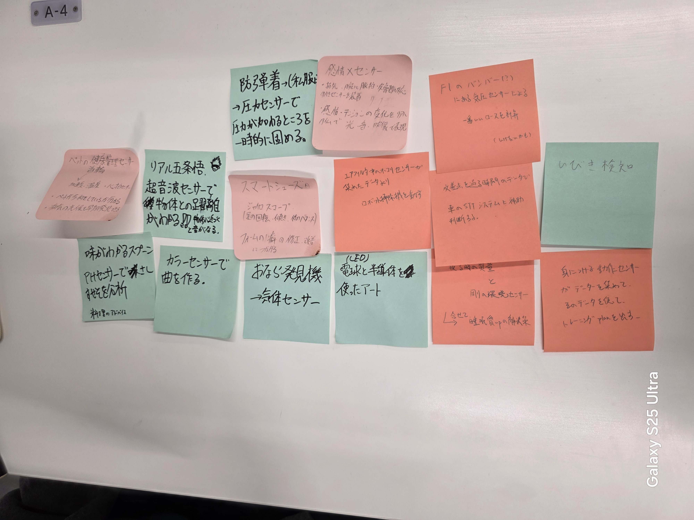

-グループワークのポストイット-

・LEDライトアート→スマホを使って色合いや起動時間帯を調整できる。
・音センサーを使った、いびき検知など
個人的には、「お弁当」や「冷凍食品」などの項目がある電子レンジで「お弁当」を選択すると漬物の部分だけ温めず、「冷凍食品」を選択すると全体的に温めてくれるようなレンジが一般家庭に広まると便利だし、価値のあるデータになるかなと考えた。
確かシャープ辺りが開発していた気がするが、それを家庭用に、IOTを利用してスマホでもレンジのどの部分を温めるか等の設定や電力消費量を確認できるようにすればもっといい製品になると考えた。